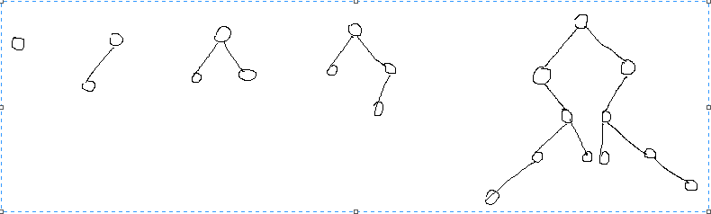
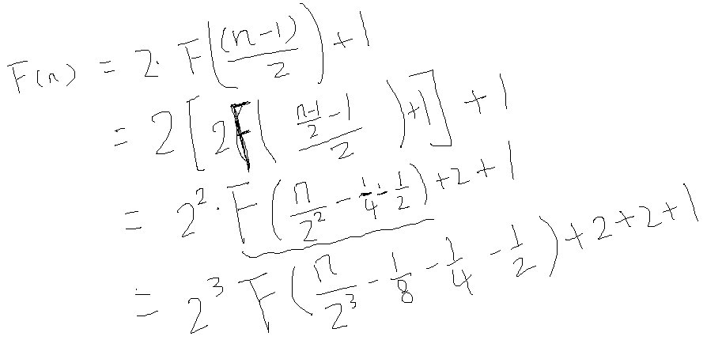

问题: 给出一个binary tree二叉树, 判断这个数是否关于根节点对称.
尝试在纸上画画形状, 例如:

这就引入一个问题, 问题中的对称是指结构上的对称就足够了, 还是还要加上node里面的值相等呢?
case 1: structure symmetric;
case 2: structure symmetric + value equal;
因为case 2是在case 1的基础上层进的, 所以并不矛盾, 先考虑case 1好了. 于是对着上面的图来写代码,
bool isSymmetricBinaryTree(Node *root)
{
// node without children
if (root->left == nullptr && root->right == nullptr)
return true;
//
if (root->left && root->right == nullptr)
return false;
if (root->left == nullptr && root->right)
return false;
// with both left and right children
return isSymmetricNodes(root->left, root->right);
}
bool isSymmetricNodes(Node *left, Node *right)
{
if (left == nullptr)
return right == nullptr;
if (right == nullptr)
return left == nullptr;
// neither left and right are nullptr;
return isSymmetricNodes(left->left, right->right)
&& isSymmetricNodes(left->right, right->left);
}
这代码是对着上面画图中的cases来写的, 只判断结构对称, 貌似加入value对称也容易. 在写上面的代码时候, 感觉好像直接可以简化为:
bool isSymmetricBinaryTree(Node *root)
{
return isSymmetricNodes(root->left, root->right);
}
ok, 代码写完了, 尝试看这个算法的time complexity.
看时间复杂度, 书里面好像会先说明这两点:
input size: n, the node number of this binary tree.
basic operation: ==, check if two nodes are not nullptr or with the same values.
因为这算法是recursive, F(n) = 2 * F( (n-1)/2 ) + 1; F(1) = 1;

感觉不是很对啊.
递归算法的复杂度分析参考:[Introduction to the Design and Analysis of Algorithms, Third Edition, Anany Levitin 影印版];